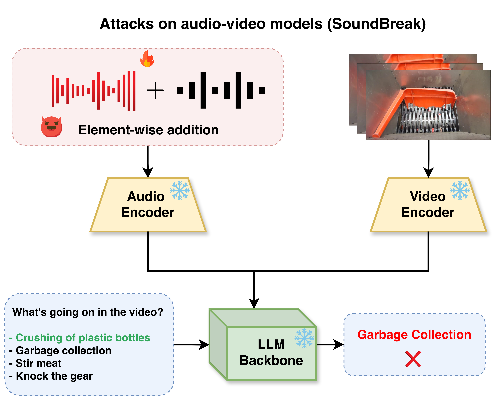
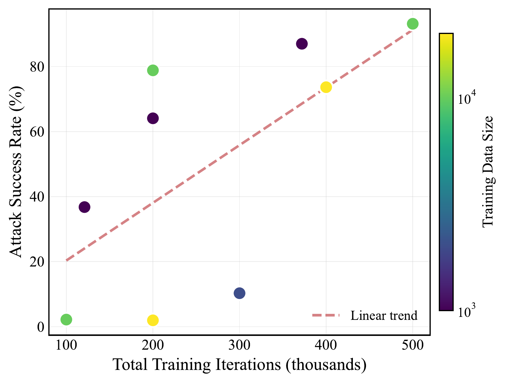
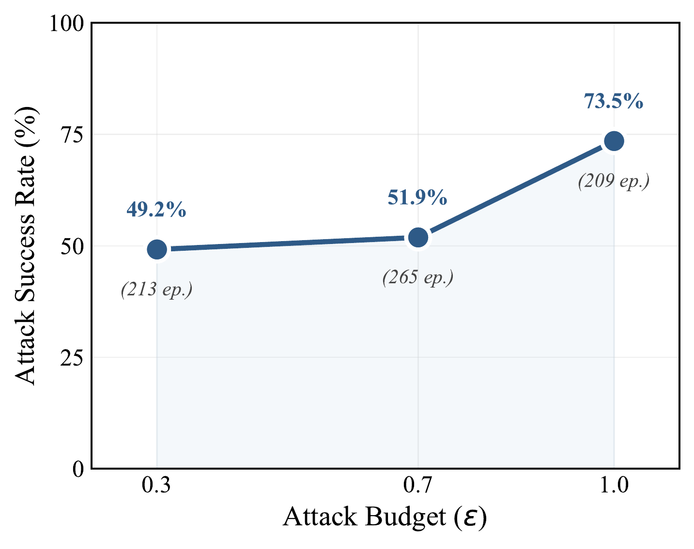
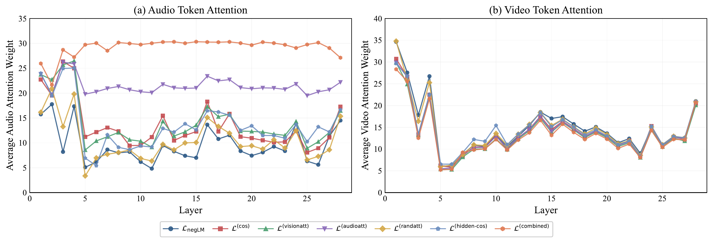

Audio-only adversarial attacks on audio–video–language models. An additive perturbation applied solely to the audio stream propagates through the model, resulting in incorrect outputs.
Multimodal foundation models that integrate audio, vision, and language achieve strong performance on reasoning and generation tasks, yet their robustness to adversarial manipulation remains poorly understood. We study a realistic and underexplored threat model: untargeted, audio-only adversarial attacks on trimodal audio–video–language models. We analyze six complementary attack objectives that target different stages of multimodal processing, including audio encoder representations, cross-modal attention, hidden states, and output likelihoods. Across four state-of-the-art models and multiple benchmarks, we show that audio-only perturbations can induce severe multimodal failures, achieving up to 96% attack success rate. We further show that attacks can be successful at low perceptual distortions (LPIPS ≤ 0.08, SI-SNR ≥ 0 dB) and benefit more from extended optimization than increased data scale. We evaluate the feasibility of these attacks under physically realistic conditions by incorporating room impulse response (RIR) modeling, showing that audio-only perturbations remain effective under environmental transformations and thus highlight the practical risk of single-modality attacks in real-world multimodal systems. Transferability across models and encoders remains limited, while speech recognition systems such as Whisper primarily respond to perturbation magnitude, achieving >97% attack success under severe distortion. These results expose a previously overlooked single-modality attack surface in multimodal systems and motivate defenses that enforce cross-modal consistency.
Core insights from our systematic study of audio-only adversarial attacks on trimodal models
The encoder-based cosine similarity loss achieves 89.12% ASR on AVQA; the combined loss reaches 96.03%. Targeting audio encoder representations is the most effective way to corrupt downstream cross-modal reasoning.
Perturbations trained on one architecture fail to transfer to others. Attacks exploit model-specific representational geometries rather than universal multimodal vulnerabilities.
Encoder-space and attention-based attacks achieve high success with minimal perceptual distortion. Adversarial failures arise from subtle, structured perturbations rather than large acoustic noise.
Extended optimization on small datasets consistently outperforms training on larger datasets with fewer iterations, revealing that adversarial attacks exploit consistent model behaviors rather than dataset diversity.
With room impulse response (RIR) augmented training, the combined attack achieves 97.96% ASR under physically simulated conditions, demonstrating real-world threat relevance beyond digital settings.
Lower layers (1–10) contribute most to audio-driven attacks, mid-level layers (11–18) are most influential for vision-attention manipulation, while jointly optimizing all layers substantially boosts attack success.

Relation between total training iterations and ASR. Extended optimization on smaller datasets yields higher ASR.

Attack budget vs ASR for the encoder-space attack on VideoLLAMA2. Non-monotonic relationship between budget and effectiveness.

Layer-wise attention visualizations showing how audio-only perturbations shift attention allocation across transformer layers.
Six complementary adversarial objectives targeting different stages of multimodal processing
| Attack Objective | Target Stage | AVQA ASR (%) | LPIPS ↓ | SI-SNR (dB) ↑ |
|---|---|---|---|---|
L_negLM |
Output likelihood | 10.27 | 0.22 | −11.48 |
L_cos |
Audio encoder | 89.12 | 0.08 | −1.77 |
L_visionatt |
Vision attention | 18.72 | 0.07 | −1.02 |
L_audioatt |
Audio attention | 56.21 | 0.06 | 0.33 |
L_randatt |
Attention structure | 17.24 | 0.06 | 0.05 |
L_hidden-cos |
Hidden states | 15.13 | 0.06 | 0.56 |
L_combined |
All stages | 96.03 | 0.14 | −6.23 |
All attacks trained on VideoLLAMA2 for 150 epochs on AVQA. Evaluated on 2000 AVQA samples.
@article{hussain2025soundbreak,
title={SoundBreak: A Systematic Study of Audio-Only Adversarial Attacks on Trimodal Models},
author={Hussain, Aafiya Shamshad and Srivastava, Gaurav and Ishmam, Alvi Md and Hakim, Zaber Ibn Abdul and Thomas, Chris},
year={2025}
}